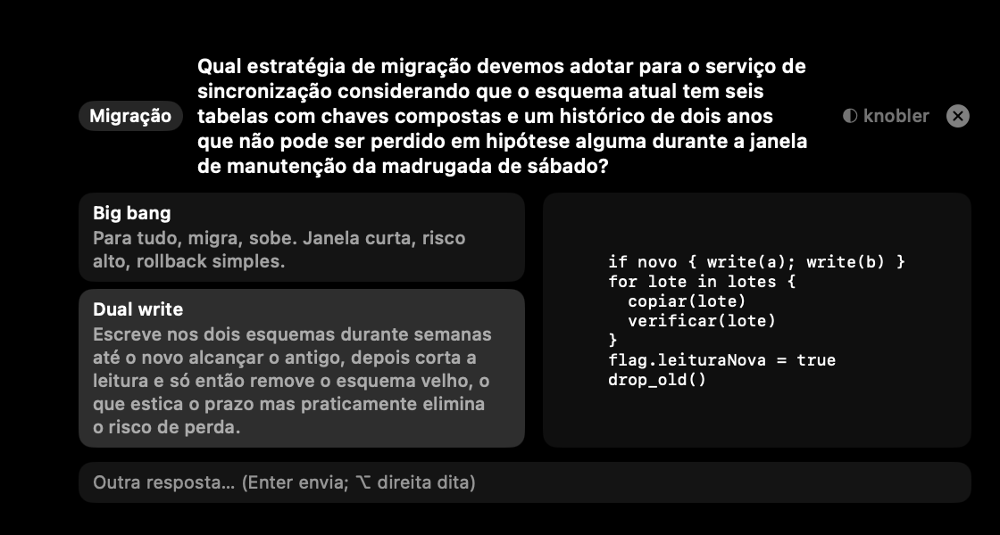

O card de pergunta cortava tudo em duas linhas: pergunta e descrição das opções. Com pergunta comprida sobrava “…” no lugar da parte que importava e não dava pra responder sem ir no terminal ler o texto original.
Agora a pergunta aparece sempre completa, e a descrição da opção que está sob o cursor abre inteira — as outras seguem em duas linhas, pra lista não virar um paredão. O card cresce e encolhe sozinho conforme o texto.

O card cresce até o topo do Dock e para por aí. Pergunta e opções descomunais ao mesmo tempo é o único caso em que o excedente ainda fica fora da tela.